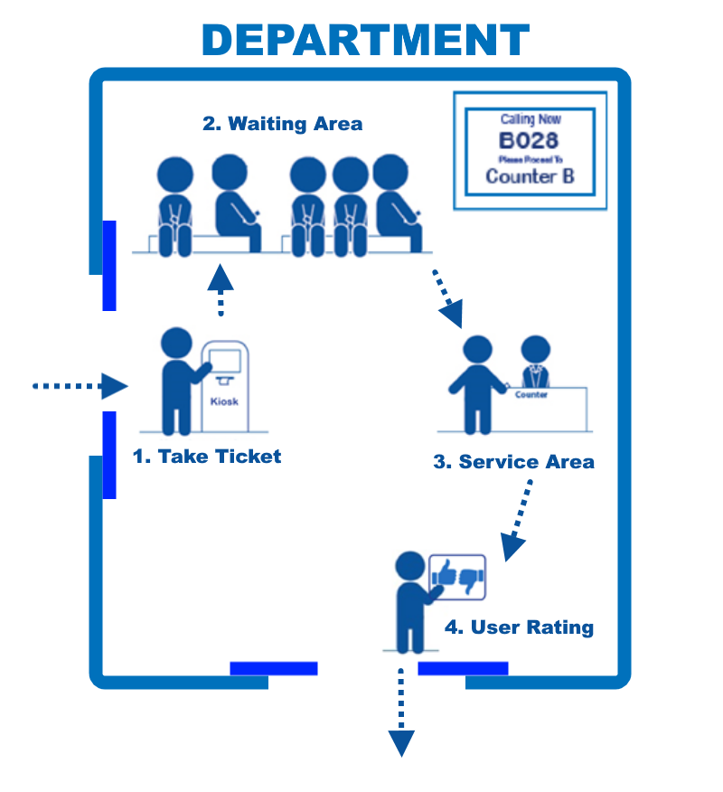

به چه دردی میخورد ؟¶
در بازار ها و شهر های بزرگ که تک تک ثانبه ها با ارزش است میتواند برای صرفه جویی در وقت و هزینه های گوناگون از آن استفاده کرد

آیا استفاده از آن آسان است ؟¶
در تمامی مراحل حتی تست نرم افزار ها سعی در سادگی و دوری از هر گونه پیچیدگی شده ایت امیدواریم همچنان ما را در ارایه بهتر یاری نمایید.
سخنی با بانک داران¶
البته که بانک یکی از ارکان مهم هر کشور است همچنین مراجعه کنندگان به بانک نیز از اهمیت ویژه ای برخوردارند پس قدر شمردن وقت مشتری و صرف وقت مفید برای ارایه خدمات بهتر جزو اصول بانکدای نوین است
سیستم نوبت دهی چیست ؟¶
سیستم نوبت دهی به مجموعه سخت افزار و نرم افزاری گفته میشود که با صدور شماره و فراخوانی به ترتیب باعث انضباط بخشیدن و تکریم ارباب رجوع خواهد شد
سیستم نوبت دهی و یا دستگاه نوبت دهی میتواند تک منظوره و یا چند منظوره باشد
انواع سیستم نوبت دهی
سیستم های نوبت دهی استند
در این نوع سیستم ها دستگاه نوبت دهی شامل استندی است که چند کلید بر روی آن تعبیه شده که با زدن هر کلید شماره چاپ شده و
و در قسمت پذیرنده هم کنترلی وجود دارد که با فشره شدن آن شماره ها به ترتیب فراخوانی خواهند شد
نحوه فراخوانی شامل نمایش اعداد بر روی تابلو و پخش شماره از طریق بلند گو میباشد
این نوع دستگاه های نوبت دهی بدون نیاز به رایانه میباشند و پردازش نوبت دهی را توسط مدار داخلی خود انجام میدهند
مزایای دستگاه نوبت دهی استندی
بی نیاز از کامپیوتر
سادگی در راه اندازی
قیمت نسبی ارزان
معایب دستگاه نوبت دهی استندی
محدودیت در اضافه کردن تعداد صف و دکمه
ثابت بودن تنظیمات و عدم توانایی کاربر در تغییرات سیستم
نیاز به شرکت سازنده در صورت خرابی
ظاهری معمولی
دستگاه نوبت دهی کیوسک
سیستم نوبت دهی بیمارستانی و درمانگاهی با هدف ایجاد امکان آرامش و نظم در محیط ،معرفی پزشکان و متخصصان ، اعلام زمان حضور پزشکان ، فراهم آوردن زمینه تعیین نوبت توسط بیماران و مراجعه کنندگان توسعه یافته است. این مدل سیستم نوبت دهی به گونه ای طراحی شده مخصوص مراكز بزرگ و پر جمعیت همچون بیمارستان ها و درمانگاه ها بوده و بر خلاف سیستم نوبت دهی بانكی كه به صورت تك بعدی عمل می كنند همه جانبه ،
سیستم نوبتدهی بیسیم¶
نسل جدید سیستمهای نوبتدهی، سیستمهای نوبتدهی بی سیم میباشد که برای ارتباط بین اجزای مختلف دستگاه از امواج الکترومغناطیسی استفاده میشود. از مزایای این گونه سیستمها میتوان به عدم نیاز به کابل کشی و داکت بندی، مصرف برق پایینتر و عدم نیاز به کامپیوتر اشاره کرد. همچنین اعمال تغییرات در این نوع سیستمها به سادگی صورت میگیرد.
نوبت دهی پیامکی چیست؟¶
از طریق این بخش شما قابلیت فعالسازی نوبت دهی هوشمند را خواهید داشت. کاربرد این بخش بیشتر برای نوبت دهی پزشکان ، آرایشگاه ها و … خواهد بود، پس از ایجاد یک نوبت دهی جدید و تنظیم آن بر روی آیتم روزها کلیک کرده و روزها و ساعات مورد نظر را تنظیم نمائید، سپس مخاطب با ارسال کلیدواژه های نوبت می تواند نوبت های خالی را رزرو نمائید، برای مشاهده نوبت های رزرو شده روی آیتم نوبت ها کلیک نمائید.
ابتدا بر روی درج جدید کلیک نمائید:
عنوان: در این بخش می توانید عنوان انتخاب نمائید.
گیرنده: شماره اختصاصی پنل شما می باشد که قابلیت دریافت پیامک را دارد.
فرستنده: شماره اختصاصی پنل شما می باشد که با آن متن پیامک را برای مخاطب ارسال می نمائید..
کلیدواژه دریافت نوبت: وفتی کاربر این کلیدواژه را ارسال نماید، نوبت برایش ارسال می شود.
وقت ها به صورت تصادفی انتخاب شود: در صورتی که تصادفی بودن علامتدار باشد اولین نوبت در یک روز به صورت تصادفی انتخاب خواهد شد.
نیاز به تائید نوبت باشد: در صورتی که مایل هستید نوبت انتخابی مخاطب را تائید نمایید، کلیدواژه تائید نوبت را در این بخش تعیین می نمایید.
متن اعلام نوبت: متنی می باشد که در هنگام تائید نوبت به مخاطب ارسال می شود.
متن نوبت تکراری: در صورت تکراری بودن نوبت، این متن به مخاطب ارسال می شود.
متن عدم وجود وقت آزاد: در صورت آزاد نبودن نوبت، این متن به مخاطب ارسال می شود.
محدود کردن به اعضای دفترچه تلفن: در صورتی که بخواهید فقط اعضای دفترچه تلفن فادر به دریافت نوبت باشند می توانید نوبت دهی را به دفترچه تلفن محدود نمائید.
اعمال بازه زمانی: زمان فعال بودن ماژول نوبت دهی را می توانید مشخص نمائید
روزها: برای هر روز زمان های ارائه ی خدمات را تعیین نمائید، زمان مورد نیاز برای ویزیت هر فرد را نیز تعیین نمائید.
دقت کنید که در صورتی که در یک روز می خواهید چند بازه زمانی تعریف کنید بازه ها نباید همپوشانی داشته باشند.
نوبت ها:در این بخش افرادی که نوبت دریافت نمودند را می توانید ملاحظه نمائید، و همچنین به صورت دستی می توانید خودتان نوبت برای افراد ایجاد نمائید و با فعال نمودن گزینه پیامک اطلاع رسانی یک نوبت به شماره موبایل درج شده ارسال می شود.
کیوسک نوبت دهی یا استند نوبت دهی چیست؟¶
کیوسک نوبت دهی جز اصلی و مرکزی در یک سیستم نوبت دهی است.
سیستم نوبت دهی مکانیزمی ست که با کمک آن می توان مدیریت هوشمند صفوف را انجام داد به عبارتی با کمک سیستم نوبت دهی تشکیل صف بصورت فیزیکی دیگر نبوده و تنها با صدور بلیط که توسط کیوسک نوبت دهی یا استند نوبت دهی انجام می گیرد امکان پذیر می باشد.
در این روش فرد مراجعه کننده بلیط خود را از استند نوبت دهی یا کیوسک نوبت دهی دریافت می کند و پس از آن تشکیل صف بصورت مجازی بوده در نتیجه معایب صف بندی سنتی نظیر هرج و مرج و بی نظمی از بین رفته و تنها با یک استند نوبت دهی یا کیوسک نوبت دهی گرفتن نوبت میسر می باشد.
استند نوبت دهی یا کیوسک نوبت دهی انواع مختلفی دارد و متناسب با محلی که قرار است استفاده شود
می توان نوع بهینه آنرا انتخاب نمود.
به عنوان مثال استند نوبت دهی ایستاده ،استندی شکیل و شناخته شده برای مکان هایی که مراجعه کننده زیاد دارند واستند نوبت دهی رومیزی،دیواری برای مکان هایی که فضای کافی جهت استفاده استند نوبت دهی ایستاده را ندارند پیشنهاد می شود.